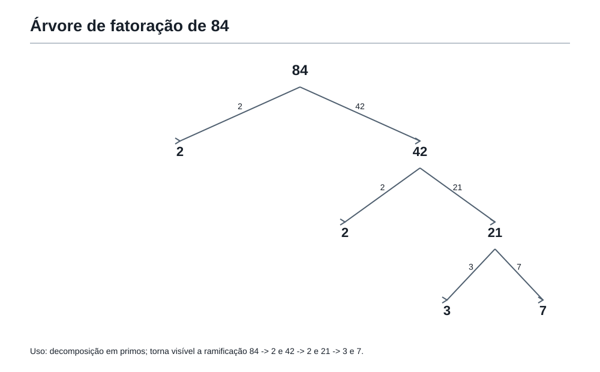

O mundo dos números
Nota editorial
Este capítulo é uma etapa prática da revisão global iniciada na Oficina da Revisão.
Na montagem final do livro, este texto deve substituir o rascunho antigo do Capítulo 2 — O mundo dos números.
Aqui, o número deixa de ser apenas algo que aparece em uma conta. Ele começa a ser observado por dentro: seus divisores, seus múltiplos, sua forma de se decompor, suas possibilidades e suas armadilhas.
Este capítulo não deve parecer uma lista de definições. A ideia principal continua sendo a mesma da Academia do Raciocínio:
Primeiro nasce a ideia. Depois aparece o nome.
Nota de auditoria direta (Capítulo 40): os blocos marcados como “Problema em estilo OBMEP” e os desafios da Oficina são materiais originais deste livro. Atividades de resposta aberta, quando houver, devem ser identificadas como tais e não recebem aparência de gabarito único.
1. Depois da primeira chave
Felipe saiu da primeira sala da Academia do Raciocínio com uma descoberta simples e poderosa:
antes de calcular, é preciso aprender a olhar.
Na porta seguinte, havia apenas uma placa.
O mundo dos números
Felipe sorriu.
— Essa parece fácil.
O Professor da Academia não respondeu imediatamente. Apontou para uma mesa de madeira. Sobre ela havia cartões com números:
6, 8, 12, 15, 24, 25, 36
— O que você vê? — perguntou o Professor.
Felipe respondeu depressa:
— Números.
A coruja, pousada no alto da porta, virou a cabeça.
— Isso é o que eles são por fora. Mas o que eles escondem por dentro?
Felipe olhou de novo.
Alguns eram pares.
Alguns terminavam em 5.
Alguns pareciam aparecer em tabuadas conhecidas.
O 24 parecia ter muitos jeitos de ser dividido.
O 25 parecia quadrado.
O 36 parecia ainda mais organizado.
A primeira chave já começava a funcionar.
Ele não estava apenas vendo números.
Estava começando a investigar números.
2. Números por fora e por dentro
Um número tem aparência.
O número 24, por exemplo, parece apenas um símbolo formado pelos algarismos 2 e 4.
Mas um número também tem estrutura.
O 24 pode ser visto como:
- 12 + 12;
- 20 + 4;
- 6 × 4;
- 3 × 8;
- 2 × 12;
- 1 × 24.
Essas escritas não são apenas maneiras diferentes de fazer conta. Elas mostram como o número pode ser construído.
O Professor escreveu:
Um número não é só uma quantidade. É também uma construção.
Felipe pegou o cartão do 24.
— Então o 24 tem várias portas de entrada.
— Exatamente — disse o Professor. — E, em problemas olímpicos, muitas vezes a porta certa não é a conta mais rápida. É a forma mais inteligente de olhar o número.
3. O estranho caso do número 24
O Professor colocou 24 medalhas pequenas sobre a mesa.
— Imagine que queremos guardar essas medalhas em saquinhos iguais, sem sobrar nenhuma medalha e sem deixar nenhum saquinho incompleto.
Felipe começou a testar.
Se colocar 1 medalha em cada saquinho, dá certo.
Se colocar 2 medalhas em cada saquinho, dá certo: 12 saquinhos.
Se colocar 3 medalhas em cada saquinho, dá certo: 8 saquinhos.
Se colocar 4 medalhas em cada saquinho, dá certo: 6 saquinhos.
Se colocar 5 medalhas em cada saquinho, não dá certo.
Se colocar 6 medalhas em cada saquinho, dá certo: 4 saquinhos.
Se colocar 7, não dá certo.
Se colocar 8, dá certo: 3 saquinhos.
Se colocar 12, dá certo: 2 saquinhos.
Se colocar 24, dá certo: 1 saquinho.
A lista que realmente funcionava era:
1, 2, 3, 4, 6, 8, 12, 24
O Professor esperou alguns segundos.
— Esses números têm uma relação especial com o 24. Eles dividem o 24 sem deixar sobra.
Agora o nome podia aparecer.
Os números que dividem outro número sem deixar resto são chamados de divisores desse número.
Então:
1, 2, 3, 4, 6, 8, 12 e 24 são divisores de 24.
Felipe observou a lista.
— O 5 não entrou porque sobra.
— Sim. E essa sobra é uma informação importante. Às vezes, descobrir que algo não funciona é tão útil quanto descobrir que funciona.
4. Dividir sem sobrar
A Academia não tratava a palavra “divisor” como decoração.
Um divisor serve para responder perguntas como:
- Posso dividir estes objetos em grupos iguais?
- Posso formar caixas com a mesma quantidade?
- Posso cortar uma fita em pedaços iguais sem sobra?
- Posso organizar pessoas em fileiras completas?
- Posso repartir medalhas, cartas, fichas ou livros sem quebrar a regra?
O Professor escreveu no quadro:
18 pode ser dividido em grupos de 3?
Felipe pensou:
18 ÷ 3 = 6.
Não sobra nada.
Então 3 é divisor de 18.
Depois o Professor escreveu:
18 pode ser dividido em grupos de 5?
Felipe pensou:
5 + 5 + 5 = 15, e ainda sobram 3.
Então 5 não é divisor de 18.
A coruja comentou:
— Divisor não é o número que aparece na conta. Divisor é o número que encaixa perfeitamente.
Essa frase ficou na parede da sala.
Dividir sem sobrar é encaixar perfeitamente.
5. O outro lado: múltiplos
O Professor agora apagou a mesa e colocou uma régua comprida no chão da Academia.
Nela estavam marcados alguns números:
0, 3, 6, 9, 12, 15, 18, 21, 24, 27, 30
— O que esses números têm em comum?
Felipe respondeu:
— Eles pulam de 3 em 3.
— Então todos eles aparecem quando damos passos de tamanho 3. São números que podem ser formados multiplicando 3 por algum número inteiro.
Agora o nome podia aparecer.
Os números que aparecem quando multiplicamos um número por 1, 2, 3, 4, 5... são chamados de múltiplos desse número.
Assim:
3, 6, 9, 12, 15, 18, 21, 24, 27, 30... são múltiplos de 3.
O Professor perguntou:
— 24 é múltiplo de 3?
— Sim, porque 3 × 8 = 24.
— E 3 é divisor de 24?
— Sim, porque 24 ÷ 3 = 8 sem sobra.
O Professor sorriu.
— Percebeu a ponte?
Felipe percebeu.
Se 3 divide 24 sem sobra, então 24 é múltiplo de 3.
O mesmo encaixe pode ser visto de dois lados:
- 3 é divisor de 24;
- 24 é múltiplo de 3.
6. Dois lados da mesma porta
O Professor desenhou uma porta com duas placas.
De um lado:
3 é divisor de 24.
Do outro:
24 é múltiplo de 3.
Era a mesma porta.
A diferença estava no ponto de vista.
A coruja explicou:
— Quando você olha do número pequeno para o grande, pensa em múltiplos. Quando olha do número grande para o pequeno, pensa em divisores.
Felipe anotou no caderno:
Divisor olha para dentro do número.
Múltiplo olha para a trilha que o número constrói.
Essa distinção seria importante mais adiante.
No Capítulo 4, ela ajudaria a separar problemas de MDC e MMC.
Mas agora a Academia não tinha pressa.
Primeiro era preciso sentir a ideia.
7. O perigo da lista apressada
O Professor escreveu:
Quais são os divisores de 30?
Felipe começou:
1, 2, 3, 5, 6, 10, 15, 30.
— Ótimo — disse o Professor. — Agora me diga: como você sabe que não esqueceu nenhum?
Felipe parou.
Essa era uma pergunta mais importante do que parecia.
Listar divisores não é apenas sair testando números sem ordem.
É preciso organizar.
Uma forma inteligente é procurar pares de multiplicação:
1 × 30
2 × 15
3 × 10
5 × 6
Todos esses produtos dão 30.
Então os divisores são:
1, 2, 3, 5, 6, 10, 15, 30
Organizar por pares evita esquecer divisores e ajuda a perceber quando a lista terminou.
O Professor perguntou:
— Por que paramos depois do par 5 × 6?
Felipe pensou.
Depois viria 6 × 5, que já apareceu.
Depois 10 × 3, que já apareceu.
Depois 15 × 2, que já apareceu.
Depois 30 × 1, que já apareceu.
A lista começou a se repetir.
A coruja bateu as asas.
— Quando a investigação começa a voltar pelo mesmo caminho, talvez você já tenha encontrado tudo.
8. O número pode contar uma mentira?
O Professor escreveu uma frase no quadro:
Todo número ímpar é primo.
Felipe olhou rápido.
Números ímpares famosos: 3, 5, 7, 11, 13.
Todos primos.
A frase parecia verdadeira.
Mas a Academia não aceitava frases apenas porque pareciam bonitas.
— Como derrubamos uma frase que diz “todo”? — perguntou a coruja.
Felipe lembrou da primeira chave.
Basta encontrar um caso que não obedece.
O número 9 é ímpar.
Mas 9 = 3 × 3.
Então 9 não é primo.
A frase caiu.
Esse tipo de exemplo recebe um nome importante.
Um contraexemplo é um caso que mostra que uma afirmação geral é falsa.
A afirmação “todo número ímpar é primo” é falsa porque 9 é um contraexemplo.
Também poderiam servir 15, 21, 25, 27, 33...
O Professor destacou:
Em matemática, uma frase com “todo”, “sempre” ou “nunca” precisa sobreviver a todos os casos. Um único contraexemplo certo derruba a frase.
Essa ferramenta já começava a entrar na Mochila.
9. Os primos entram em cena
O Professor colocou quatro cartões sobre a mesa:
2, 6, 7, 12
— Alguns números podem ser construídos de muitos jeitos. Outros parecem ter uma estrutura mais simples.
Felipe começou pelo 6:
6 = 1 × 6
6 = 2 × 3
O 6 tinha divisores 1, 2, 3 e 6.
Depois olhou o 12:
12 = 1 × 12
12 = 2 × 6
12 = 3 × 4
O 12 tinha vários divisores.
Depois olhou o 7.
7 = 1 × 7.
Não havia outro jeito de formar 7 como produto de números naturais maiores que 1.
O Professor explicou:
Um número maior que 1 que só tem dois divisores positivos, 1 e ele mesmo, é chamado de número primo.
Então 7 é primo.
E o 2?
2 = 1 × 2.
O 2 também só tem dois divisores positivos: 1 e 2.
Então 2 é primo.
A coruja completou:
— O 2 é o único primo par.
Felipe pensou no motivo.
Todo número par maior que 2 é divisível por 2, mas também tem 1 e ele mesmo como divisores.
Por exemplo, 8 tem 1, 2, 4 e 8.
Então não pode ser primo.
O 2 é especial porque ser divisível por 2 não acrescenta um terceiro divisor. O próprio número já é 2.
10. Números compostos
Se os primos são números que não se quebram em fatores menores além de 1 e eles mesmos, os outros números maiores que 1 recebem outro nome.
Um número maior que 1 que tem mais de dois divisores positivos é chamado de composto.
6 é composto, porque 6 = 2 × 3.
12 é composto, porque 12 = 3 × 4.
25 é composto, porque 25 = 5 × 5.
49 é composto, porque 49 = 7 × 7.
O Professor fez questão de destacar o 25 e o 49.
— Um número não deixa de ser composto só porque seus fatores são iguais. Se ele pode ser escrito como produto de dois números maiores que 1, ele já tem estrutura interna.
Felipe percebeu outra armadilha:
— Então número ímpar também pode ser composto.
— Sim. 9, 15, 21, 25, 27, 33, 35, 39... todos são ímpares compostos.
A frase da sala ficou mais precisa:
Primo não significa “número estranho”. Primo significa “número com exatamente dois divisores positivos”.
11. O número 1 é primo?
Felipe levantou a mão.
— E o 1?
A pergunta era pequena, mas importante.
O 1 tem apenas um divisor positivo: ele mesmo.
Para ser primo, um número precisa ter exatamente dois divisores positivos: 1 e ele mesmo.
No caso do 1, esses dois papéis viram a mesma coisa.
Ele não tem dois divisores diferentes.
Então:
O número 1 não é primo.
O Professor acrescentou:
— Essa escolha não é capricho. Ela ajuda a manter a fatoração dos números organizada.
Felipe ainda não precisava conhecer todos os detalhes dessa história.
Mas precisava guardar a regra com clareza:
1 não é primo.
2 é primo.
Todo primo maior que 2 é ímpar.
Nem todo ímpar é primo.
12. Construindo números por dentro
O Professor escreveu:
84
— Vamos desmontar esse número.
Felipe começou:
84 = 2 × 42
42 = 2 × 21
21 = 3 × 7
Então:
84 = 2 × 2 × 3 × 7
Todos os fatores finais eram primos.
O Professor desenhou uma árvore:
84
/ \
2 42
/ \
2 21
/ \
3 7

Essa árvore não era decoração.
Ela mostrava que o número 84 podia ser desmontado até chegar em peças fundamentais.
A coruja disse:
— Os primos são como peças básicas de construção dos números.
O Professor completou:
Decompor um número em fatores primos é escrever esse número como produto de números primos.
Mais adiante, essa ideia seria usada para encontrar divisores comuns, múltiplos comuns, MDC e MMC com mais eficiência.
Por enquanto, bastava entender o sentido:
desmontar para enxergar a estrutura.
13. Nem todo caminho de desmontagem parece igual
Felipe tentou decompor 84 de outro jeito:
84 = 7 × 12
12 = 3 × 4
4 = 2 × 2
Então:
84 = 7 × 3 × 2 × 2
A ordem mudou.
Mas as peças eram as mesmas:
2, 2, 3, 7
O Professor explicou:
— A ordem dos fatores pode mudar, mas a construção fundamental é a mesma.
Não era necessário transformar isso em teorema naquele momento.
Mas a ideia era forte:
Quando desmontamos corretamente um número composto até chegar aos primos, encontramos suas peças básicas.
Felipe olhou para o 84 como se ele não fosse mais apenas 84.
Agora ele via:
84 = 2² × 3 × 7
A notação com expoente podia aparecer como uma economia de escrita:
2 × 2 = 2²
Então:
84 = 2² × 3 × 7
O Professor avisou:
— Expoente aqui não é enfeite. É apenas uma forma curta de dizer que o fator se repete.
14. O erro de confiar só no tamanho
O Professor colocou dois números no quadro:
97 e 100
— Qual deles parece mais complicado?
Felipe respondeu:
— 100 parece maior e mais pesado.
Mas 100 se desmonta facilmente:
100 = 10 × 10 = 2 × 5 × 2 × 5 = 2² × 5².
Já 97 não é divisível por 2, nem por 3, nem por 5, nem por 7.
E, como 10 × 10 já passa de 97, não precisamos testar divisores maiores que 10 para procurar um fator pequeno que se repita do outro lado.
97 é primo.
O Professor explicou com cuidado:
— Números grandes podem ser simples em estrutura. Números menores podem ter muitos divisores. Não julgue um número apenas pelo tamanho.
A coruja deixou uma pergunta no ar:
— O número é grande ou é cheio de portas?
Essa pergunta era mais olímpica do que parecia.
15. A informação essencial
O Professor escreveu:
Um número de dois algarismos é múltiplo de 6 e termina em 4. Quais são as possibilidades?
Felipe começou a listar todos os números de dois algarismos que terminam em 4:
14, 24, 34, 44, 54, 64, 74, 84, 94.
Agora precisava testar quais eram múltiplos de 6.
Múltiplo de 6 significa múltiplo de 2 e de 3 ao mesmo tempo.
Todos os números da lista terminam em 4, então todos são pares.
Mas nem todos têm soma dos algarismos múltipla de 3.
14: 1 + 4 = 5, não.
24: 2 + 4 = 6, sim.
34: 3 + 4 = 7, não.
44: 4 + 4 = 8, não.
54: 5 + 4 = 9, sim.
64: 6 + 4 = 10, não.
74: 7 + 4 = 11, não.
84: 8 + 4 = 12, sim.
94: 9 + 4 = 13, não.
As possibilidades são:
24, 54 e 84.
O Professor destacou:
— O segredo não foi testar tudo sem pensar. Foi usar a informação essencial: dois algarismos, termina em 4, múltiplo de 6.
Essa ferramenta ainda seria usada muitas vezes.
Em problemas olímpicos, quase sempre há dados que guiam e dados que distraem. A primeira tarefa é descobrir quais informações realmente mandam no problema.
OBMEP16. Problema em estilo OBMEP — As caixas de medalhas
A Academia tem 48 medalhas de bronze.
Elas serão guardadas em caixas, todas com a mesma quantidade de medalhas.
Nenhuma medalha pode sobrar.
A caixa não pode ter apenas 1 medalha, e também não pode conter todas as 48 medalhas.
Quais quantidades de medalhas por caixa são possíveis?
Ver solução
Solução comentada
A pergunta pede quantidades que dividem 48 sem deixar sobra.
Então precisamos procurar divisores de 48.
Vamos organizar por pares de multiplicação:
1 × 48
2 × 24
3 × 16
4 × 12
6 × 8
Agora a lista de divisores é:
1, 2, 3, 4, 6, 8, 12, 16, 24, 48
Mas o enunciado proibiu duas opções:
- caixa com apenas 1 medalha;
- uma única caixa com todas as 48 medalhas.
Então retiramos 1 e 48.
As quantidades possíveis são:
2, 3, 4, 6, 8, 12, 16 e 24.
O que este problema treinou
Não bastava listar divisores.
Era preciso ler a restrição final.
A resposta não era “todos os divisores de 48”.
Era “todos os divisores de 48, exceto 1 e 48”.
A pergunta escondida estava nos detalhes.
OBMEP17. Problema em estilo OBMEP — O número da porta
A porta da segunda sala da Academia só abre com um número de dois algarismos.
O número:
- é múltiplo de 4;
- é múltiplo de 6;
- é menor que 50;
- não é 24.
Quais números podem abrir a porta?
Ver solução
Solução comentada
O número precisa ser múltiplo de 4 e de 6 ao mesmo tempo.
Vamos listar múltiplos de 4 menores que 50:
4, 8, 12, 16, 20, 24, 28, 32, 36, 40, 44, 48.
Agora verificamos quais também são múltiplos de 6:
12 = 6 × 2, sim.
24 = 6 × 4, sim.
36 = 6 × 6, sim.
48 = 6 × 8, sim.
Mas o enunciado diz que o número não é 24.
Então as possibilidades são:
12, 36 e 48.
Outra forma de pensar
Um número que é múltiplo de 4 e de 6 precisa aparecer no encontro das duas trilhas:
Múltiplos de 4: 4, 8, 12, 16, 20, 24, 28, 32, 36, 40, 44, 48...
Múltiplos de 6: 6, 12, 18, 24, 30, 36, 42, 48...
Os encontros menores que 50 são:
12, 24, 36, 48
Tirando 24:
12, 36, 48
O que este problema treinou
Aqui apareceu uma ponte para o Capítulo 4: encontros de múltiplos.
Mas ainda não precisamos chamar isso de MMC.
A ideia nasceu antes do nome.
OBMEP18. Problema em estilo OBMEP — O primo escondido
Um cartão tem um número de dois algarismos.
Sabe-se que:
- o número é maior que 40;
- é menor que 60;
- a soma de seus algarismos é 11;
- o número é primo.
Qual é o número?
Ver solução
Solução comentada
Os números entre 40 e 60 cuja soma dos algarismos é 11 são:
47, pois 4 + 7 = 11.
56, pois 5 + 6 = 11.
Agora precisamos verificar qual deles é primo.
56 é par e maior que 2, então não é primo.
Também podemos ver que 56 = 7 × 8.
47 não é divisível por 2, por 3, por 5 nem por 7.
Como 7 × 7 = 49, não precisamos testar números maiores para encontrar um divisor menor.
Então 47 é primo.
Resposta:
47
O que este problema treinou
A condição “soma dos algarismos é 11” reduziu muito a busca.
A condição “primo” decidiu entre as possibilidades.
Um problema olímpico quase nunca entrega uma única pista.
Ele entrega pistas que precisam conversar.
Oficina19. Oficina Olímpica 1 — Pensar os números por dentro
Esta oficina não é uma lista mecânica de contas.
Ela é um treino de olhar para a estrutura dos números.
Use o caderno se quiser.
Antes de calcular, pergunte:
- o problema fala de dividir sem sobrar?
- fala de aparecer em uma trilha de múltiplos?
- pede um número com poucos divisores?
- tem uma afirmação geral que pode cair com contraexemplo?
- há uma informação essencial escondida em palavras pequenas?
Desafio 1 — Divisores organizados
Liste os divisores de 36 sem esquecer nenhum.
Ver solução
Solução
Organizamos por pares:
1 × 36
2 × 18
3 × 12
4 × 9
6 × 6
Divisores:
1, 2, 3, 4, 6, 9, 12, 18, 36
O par 6 × 6 mostra que 36 é um quadrado perfeito.
O 6 aparece uma vez só na lista.
Desafio 2 — A frase falsa
A frase abaixo é verdadeira ou falsa?
Todo número que termina em 5 é primo.
Ver solução
Solução
É falsa.
Um contraexemplo é 15.
15 termina em 5, mas 15 = 3 × 5.
Então 15 não é primo.
Também serviriam 25, 35, 45, 55...
Um único contraexemplo correto basta para derrubar uma afirmação com “todo”.
Desafio 3 — Trilhas de múltiplos
Quais múltiplos de 7 estão entre 30 e 60?
Ver solução
Solução
Vamos listar a trilha do 7:
7, 14, 21, 28, 35, 42, 49, 56, 63...
Entre 30 e 60 ficam:
35, 42, 49 e 56
Desafio 4 — Primo ou composto?
Classifique os números 29, 39, 49 e 51 como primos ou compostos.
Ver solução
Solução
29 não é divisível por 2, 3 ou 5.
Como 5 × 5 = 25 e 6 × 6 = 36, basta testar até 5 para procurar divisor pequeno.
29 é primo.
39 é divisível por 3, pois 3 + 9 = 12, e 12 é múltiplo de 3.
39 = 3 × 13.
39 é composto.
49 = 7 × 7.
49 é composto.
51 é divisível por 3, pois 5 + 1 = 6.
51 = 3 × 17.
51 é composto.
Resposta:
- 29: primo;
- 39: composto;
- 49: composto;
- 51: composto.
Desafio 5 — O número possível
Um número de dois algarismos:
- é múltiplo de 9;
- é menor que 50;
- é maior que 20;
- é par.
Qual é o número?
Ver solução
Solução
Múltiplos de 9 entre 20 e 50:
27, 36, 45.
Entre eles, o único par é:
36
20. As ferramentas da Mochila nesta sala
Nesta versão harmonizada do Capítulo 2, a Mochila do Matemático ganha organização para a família inicial dos números.
As ferramentas centrais são:
- olhar o número por dentro, não apenas pelo tamanho;
- procurar divisões sem sobra;
- reconhecer divisores;
- reconhecer múltiplos como trilhas;
- ver divisor e múltiplo como dois lados da mesma relação;
- listar divisores por pares para não esquecer casos;
- usar contraexemplos para testar frases com “todo”, “sempre” e “nunca”;
- reconhecer números primos;
- reconhecer números compostos;
- decompor números compostos em fatores primos;
- separar informação essencial de informação decorativa;
- deixar a ideia nascer antes do nome.
Algumas dessas ferramentas já estavam preparadas desde a entrada do livro.
Outras serão aprofundadas quando a Academia chegar a restos, ciclos, MDC e MMC.
21. A frase da Academia
Na saída da sala, o Professor entregou a Felipe um cartão.
Nele estava escrito:
Número não é só quantidade. É estrutura.
Felipe guardou o cartão na Mochila.
Agora ele sabia que um número podia ser olhado por dentro.
Podia ter divisores.
Podia caminhar por múltiplos.
Podia ser primo.
Podia ser composto.
Podia esconder uma decomposição.
Podia derrubar uma frase apressada com um único contraexemplo.
O mundo dos números parecia menos plano.
Parecia ter profundidade.
22. Pergunta para amanhã
Antes de sair, Felipe olhou para a régua dos múltiplos.
3, 6, 9, 12, 15, 18...
4, 8, 12, 16, 20, 24...
5, 10, 15, 20, 25, 30...
Ele percebeu que algumas trilhas se encontravam.
Outras pareciam deixar sobras.
Alguns números apareciam em ciclos.
A coruja fez a pergunta que abriria a próxima sala:
Quando uma divisão não encaixa perfeitamente, a sobra é apenas um erro — ou pode virar uma nova ideia?
O Professor sorriu.
A porta seguinte já tinha uma placa.
Quando sobra, nasce uma ideia.